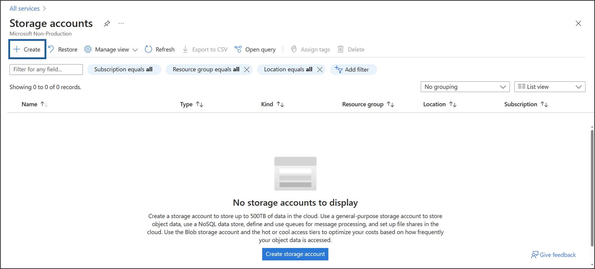
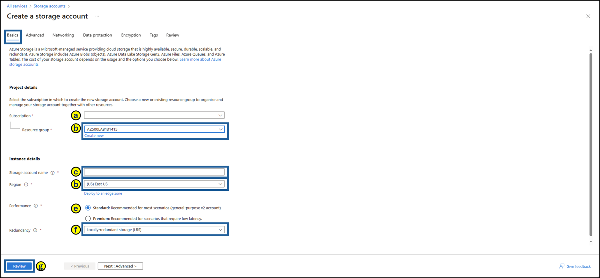
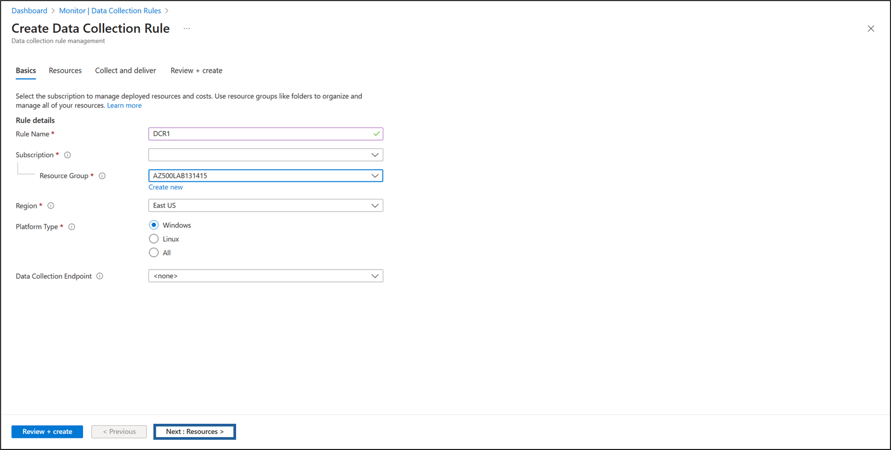
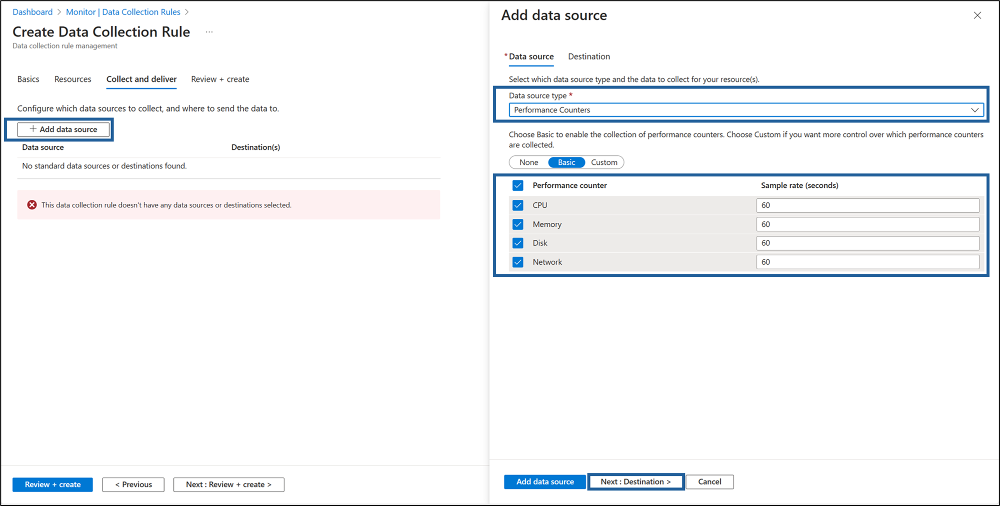
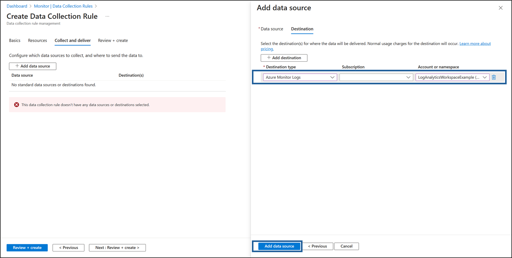
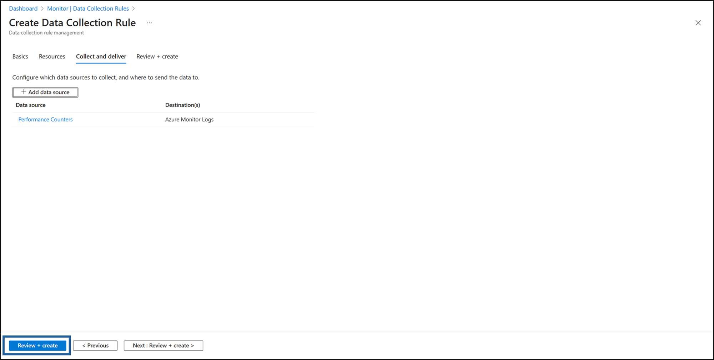
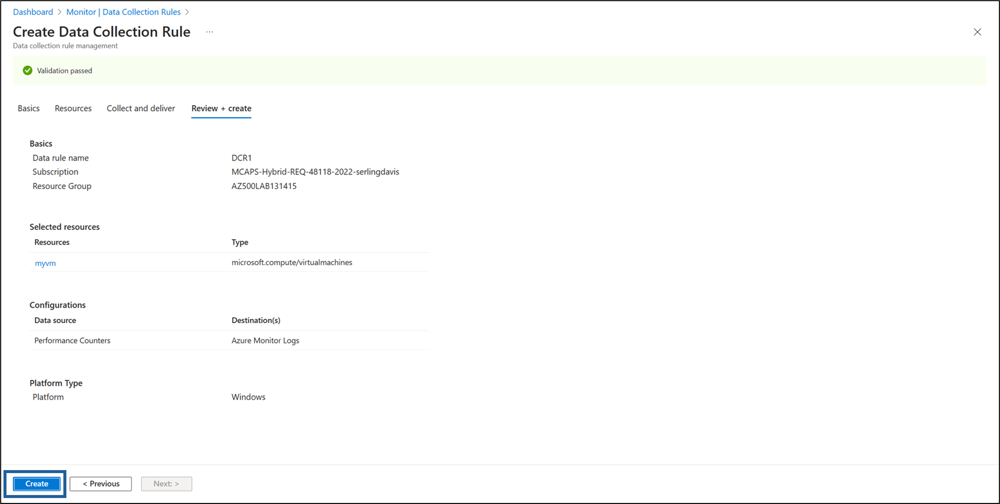

Lab 13: Azure Monitor
Student lab manual
Lab scenario
You have been asked to collect events and performance counters from virtual machines with Azure Monitor Agent.
For all the resources in this lab, we are using the East US region. Verify with your instructor this is the region to use for class.
Lab objectives
In this lab, you will complete the following exercises:
- Exercise 1: Deploy an Azure virtual machine
- Exercise 2: Create a Log Analytics workspace
- Exercise 3: Create an Azure storage account
- Exercise 4: Create a data colllection rule.
Instructions
Exercise 1: Deploy an Azure virtual machine
Exercise timing: 10 minutes
In this exercise, you will complete the following tasks:
- Task 1: Deploy an Azure virtual machine.
Task 1: Deploy an Azure virtual machine
-
Sign-in to the Azure portal
https://portal.azure.com/.Note: Sign in to the Azure portal using an account that has the Owner or Contributor role in the Azure subscription you are using for this lab.
-
Open the Cloud Shell by clicking the first icon in the top right of the Azure Portal. If prompted, select PowerShell and Create storage.
-
Ensure PowerShell is selected in the drop-down menu in the upper-left corner of the Cloud Shell pane.
-
In the PowerShell session within the Cloud Shell pane, run the following to create a resource group that will be used in this lab:
New-AzResourceGroup -Name AZ500LAB131415 -Location 'EastUS'Note: This resource group will be used for labs 13, 14, and 15.
-
In the PowerShell session within the Cloud Shell pane, run the following to create a new Azure virtual machine.
New-AzVm -ResourceGroupName "AZ500LAB131415" -Name "myVM" -Location 'EastUS' -VirtualNetworkName "myVnet" -SubnetName "mySubnet" -SecurityGroupName "myNetworkSecurityGroup" -PublicIpAddressName "myPublicIpAddress" -PublicIpSku Standard -OpenPorts 80,3389 -Size Standard_DS1_v2 -
When prompted for credentials:
Setting Value User localadmin Password Please use your personal password created in Lab 04 > Exercise 1 > Task 1 > Step 9. Note: Wait for the deployment to complete.
-
In the PowerShell session within the Cloud Shell pane, run the following to confirm that the virtual machine named myVM was created and its ProvisioningState is Succeeded.
Get-AzVM -Name 'myVM' -ResourceGroupName 'AZ500LAB131415' | Format-Table -
Close the Cloud Shell pane.
Exercise 2: Create an Log Analytics workspace
Exercise timing: 10 minutes
In this exercise, you will complete the following tasks:
- Task 1: Create a Log Analytics workspace.
Task 1: Create a Log Analytics workspace
In this task, you will create a Log Analytics workspace.
-
In the Azure portal, in the Search resources, services, and docs text box at the top of the Azure portal page, type Log Analytics workspaces and press the Enter key.
-
On the Log Analytics workspaces blade, click + Create.
-
On the Basics tab of the Create Log Analytics workspace blade, specify the following settings (leave others with their default values):
Setting Value Subscription the name of the Azure subscription you are using in this lab Resource group AZ500LAB131415 Name any valid, globally unique name Region East US -
Select Review + create.
-
On the Review + create tab of the Create Log Analytics workspace blade, select Create.
Exercise 3: Create an Azure storage account
Estimated timing: 10 minutes
In this exercise, you will complete the following tasks:
- Task 1: Create an Azure storage account.
Task 1: Create an Azure storage account
In this task, you will create a storage account.
-
In the Azure portal, in the Search resources, services, and docs text box at the top of the Azure portal page, type Storage accounts and press the Enter key.
-
On the Storage accounts blade in the Azure portal, click the + Create button to create a new storage account.

-
On the Basics tab of the Create storage account blade, specify the following settings (leave others with their default values):
Setting Value Subscription the name of the Azure subscription you are using in this lab Resource group AZ500LAB131415 Storage account name any globally unique name between 3 and 24 in length consisting of letters and digits Location (US) EastUS Performance Standard (general-purpose v2 account) Redundency Locally redundant storage (LRS) -
On the Basics tab of the Create storage account blade, click Review, wait for the validation process to complete, and click Create.

Note: Wait for the Storage account to be created. This should take about 2 minutes.
Exercise 3: Create a Data Collection Rule
Estimated timing: 15 minutes
In this exercise, you will complete the following tasks:
- Task 1: Create a Data Collection Rule.
Task 1: Create a Data Collection Rule.
In this task, you will create a data collection rule.
-
In the Azure portal, in the Search resources, services, and docs text box at the top of the Azure portal page, type Monitor and press the Enter key.
-
On the Monitor Settings blade, click Data Collection Rules.
-
On the Basics tab of the Create Data Collection Rule blade, specify the following settings:
Setting Value Rule details Rule Name DCR1 Subscription the name of the Azure subscription you are using in this lab Resource Group AZ500LAB131415 Region East US Platform Type Windows Data Collection Endpoint Leave Blank 
-
Click on the button labeled Next: Resources > to proceed.
-
On the Resources tab, select + Add resources, then check Enable Data Collection Endpoints.
-
Click on the button labeled Next: Collect and deliver > to proceed.
-
Click + Add data source, then on the Add data source page, change the Data source type drop-down menu to display Performance Counters. Leave the following default settings:
Setting Value Performance counter Sample rate (seconds) CPU 60 Memory 60 Disk 60 Network 60 
-
Click on the button labeled Next: Destination > to proceed.
-
Change the Destination type drop-down menu to display Azure Monitor Logs. In the Subscription window, ensure that your Subscription is displayed, then change the Account or namespace drop-down menu to reflect your previously created Log Analytics Workspace.

-
Click on Add data source at the bottom of the page.

-
Click Review + create.

-
Click Create.
Results: You deployed an Azure virtual machine, Log Analytics workspace, Azure storage account, and a data collection rule to collect events and performance counters from virtual machines with Azure Monitor Agent.
Note: Do not remove the resources from this lab as they are needed for the Microsoft Defender for Cloud lab and the Microsoft Sentinel lab.